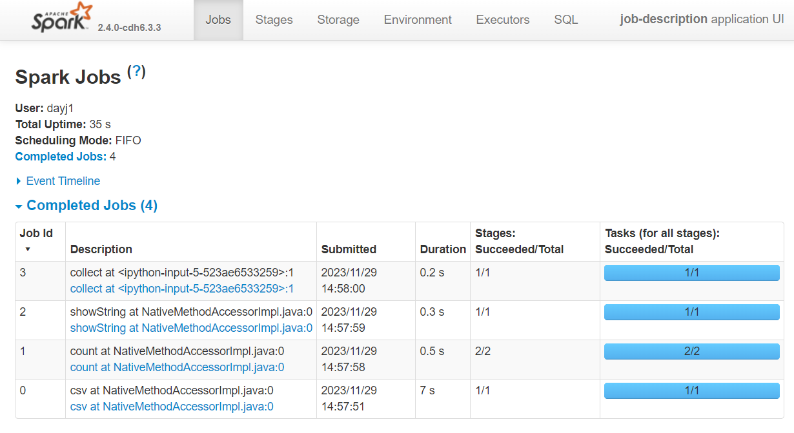
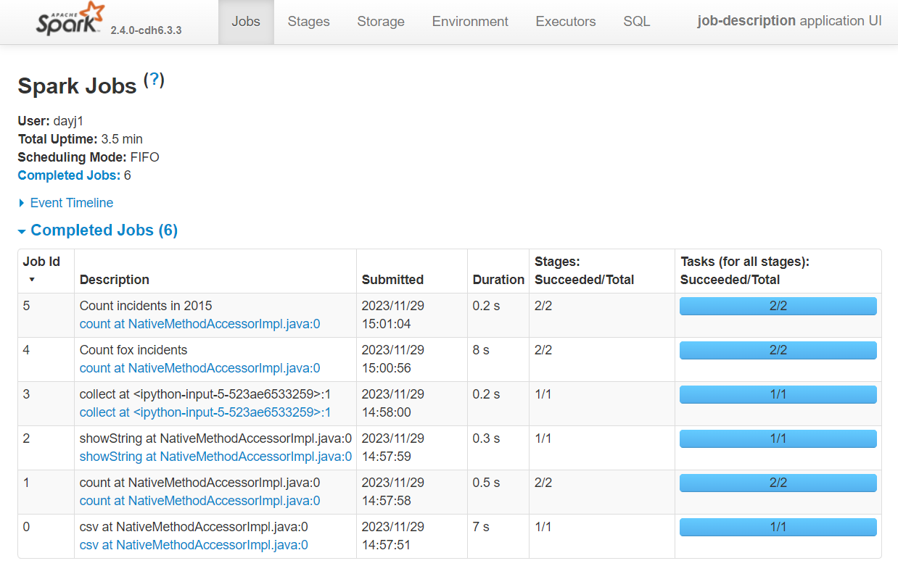
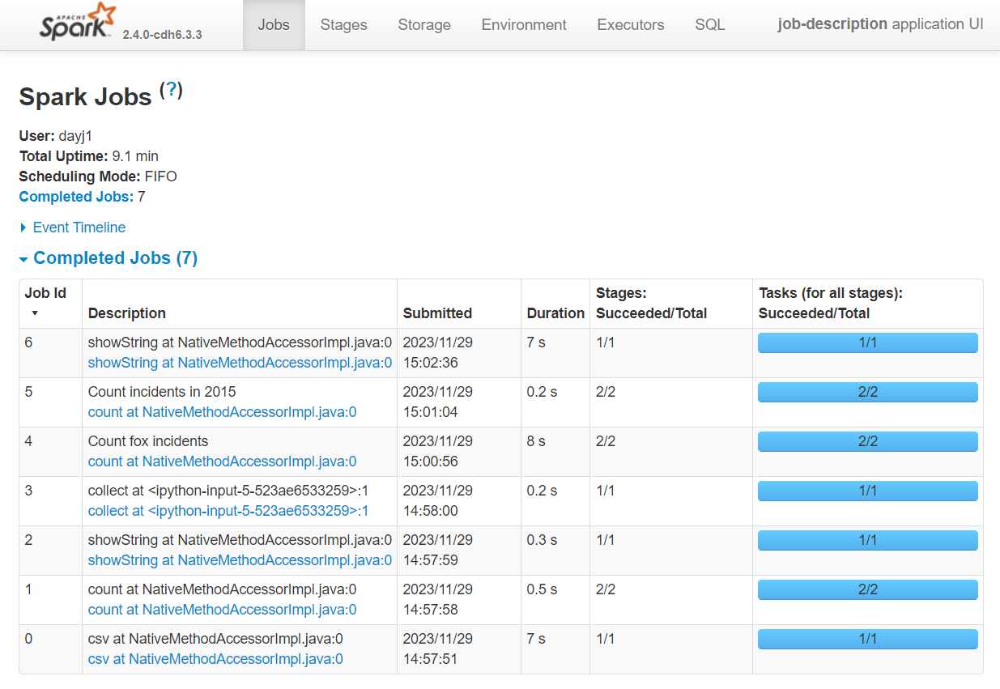

Set Spark Job Description#
The Spark UI is a great tool for: monitoring Spark applications; troubleshooting slow jobs; and generally understanding how spark will execute your code. However, it is sometimes difficult to find the correct job number to drill down on a problem.
There is a way to set the Spark job description when using Pyspark, making use of the spark.sparkContext.setJobDescription() function. This function takes a string input and will update the description column in the spark UI with the string. While this makes finding the job in the UI much easier, if we do not update the descriptions in our script or tell spark to revert back to default descriptions each job will be given the same description.
We will work through a short example to highlight its effectiveness. First we will start a Spark session and then generate the link to the Spark UI. It should be noted that the link to the spark UI in this notebook will not work as it linked to a specific spark session. You will need to rerun the code with an active spark session to generate a link for yourself.
import yaml
from pyspark.sql import SparkSession
import pyspark.sql.functions as F
import os, IPython
spark = SparkSession.builder.master("local[2]").appName("job-description").getOrCreate()
url = "spark-%s.%s" % (os.environ["CDSW_ENGINE_ID"], os.environ["CDSW_DOMAIN"])
IPython.display.HTML("<a href=http://%s>Spark UI</a>" % url)
Default descriptions#
By default spark will generate job descriptions based on the action that has been called. Now we will read in some data to perform some transformations and some actions to create a few Spark jobs.
with open("../../config.yaml") as f:
config = yaml.safe_load(f)
rescue_path = config["rescue_path_csv"]
rescue = (spark.read.csv(rescue_path, header=True, inferSchema=True)
.withColumnRenamed('AnimalGroupParent','AnimalGroup')
.select('IncidentNumber','FinalDescription','AnimalGroup','CalYear')
)
rescue.count()
5898
rescue.sort("CalYear").show(5, truncate=False)
+--------------+-----------------------------------------+-----------+-------+
|IncidentNumber|FinalDescription |AnimalGroup|CalYear|
+--------------+-----------------------------------------+-----------+-------+
|139091 |DOG WITH JAW TRAPPED IN MAGAZINE RACK,B15|Dog |2009 |
|275091 |ASSIST RSPCA WITH FOX TRAPPED,B15 |Fox |2009 |
|2075091 |DOG CAUGHT IN DRAIN,B15 |Dog |2009 |
|2872091 |HORSE TRAPPED IN LAKE,J17 |Horse |2009 |
|3553091 |RABBIT TRAPPED UNDER SOFA,B15 |Rabbit |2009 |
+--------------+-----------------------------------------+-----------+-------+
only showing top 5 rows
rescue.select("IncidentNumber", "AnimalGroup").sort("IncidentNumber").limit(3).collect()
[Row(IncidentNumber='000014-03092018M', AnimalGroup='Unknown - Heavy Livestock Animal'),
Row(IncidentNumber='000099-01012017', AnimalGroup='Dog'),
Row(IncidentNumber='000260-01012017', AnimalGroup='Bird')]
Now we can check the Spark UI. As we can see, a number of jobs have been created, but which action created each job?

In the Description column we can see the description starts with the action that created the job. This is useful to identify the correct job, but we can do one better.
Customised description#
We can customise the job description using spark.sparkContext.setJobDescription(). This is useful as we can assign a more detailed name to each job within our code. Doing so will help us understand and find the exact action which has created a job in the spark UI.
spark.sparkContext.setJobDescription("Count fox incidents")
rescue.filter(F.col("AnimalGroup") == "Fox").count()
238
spark.sparkContext.setJobDescription("Count incidents in 2015")
rescue.filter(F.col("CalYear") == 2015).count()
540
Looking at the UI again you can see our descriptions have been updated to contain our customised names.

WARNING every job from now on will have the last description we set, unless we tell spark to default back to the default descriptions.
Back to default description#
We can set the description to None to revert back to the default descriptions. This should be done if you do not plan on adding additional descriptions details into your script.
spark.sparkContext.setJobDescription(None)
rescue.show(5, truncate=False)
+--------------+-----------------------------------------+-----------+-------+
|IncidentNumber|FinalDescription |AnimalGroup|CalYear|
+--------------+-----------------------------------------+-----------+-------+
|139091 |DOG WITH JAW TRAPPED IN MAGAZINE RACK,B15|Dog |2009 |
|275091 |ASSIST RSPCA WITH FOX TRAPPED,B15 |Fox |2009 |
|2075091 |DOG CAUGHT IN DRAIN,B15 |Dog |2009 |
|2872091 |HORSE TRAPPED IN LAKE,J17 |Horse |2009 |
|3553091 |RABBIT TRAPPED UNDER SOFA,B15 |Rabbit |2009 |
+--------------+-----------------------------------------+-----------+-------+
only showing top 5 rows
The job description for the most recent job has been revered to its default:

Summary#
Default job descriptions tell you the action used to trigger the job
Set a job description to better track jobs in the Spark UI using
spark.sparkContext.setJobDescription()Remember to set the description to
Noneto go back to using default descriptions once you’ve finished tracking your jobs.The description will carry through to the Stages tab also, but will not appear in the SQL tab.
Further Resources#
Spark at the ONS Articles:
PySpark Documentation:
Spark documentation: